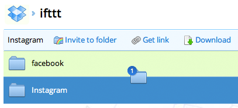

about:me
Vitaliy Petrychuk
e-mail vitaliy@petrychuk.com
skype nameless-dot
Responsive інтерфейси
Передчасна оптимізація
Передчасна оптимізація
-
Симптоми:
- Оптимізація коду ще до того
як він починає тормозити
- Оптимізація коду ще до того
-
Наслідки:
- Втрата часу
- Погіршення читабельності
Якщо браузер працює повільно
- Зменшуємо кількість операцій
- Спрощуємо операції
- Вносимо зміни в UI
Зменшуємо кількість операцій
Throttle / demo
Групує події, які були викликані в межах одного інтервалу
Зменшуємо кількість операцій
Debounce / demo
Групує події, що повторюються, інтервал між якими менший від заданого значення
Спрощуємо операції
При Drag and Drop перетягуємо не цілий об'єкт, а тільки іконку

Оптимізація селекторів
ul li a { /*...*/ }.main span { /*...*/ }#my * { /*...*/ }
Почитати:
Simplifying CSS Selectors
Оптимізація селекторів
jQuery також думає справа наліво
$('div.article a.like') // погано$('.article .like') // краще$('.like') // ще кращеОптимізація селекторів
Звуження області пошуку
Задаємо контекст:
$('div.article a.like') // погано
$('.article').find('.like') // кращеВикористовуємо children, closest etc:
$('#list').find('li') // погано
$('#list').children('li') // краще$('li').parents('div').first() // погано
$('li').closest('div') // кращеОптимізація циклів
Багато звернень до length:
for (var i = 0; i < data.length; i++) {
// data[i]
}Одне звернення:
for (var i = data.length; i--;) {
// data[i]
}Оптимізація циклів
Навіщо? / Benchmark
// воно живе
var nodes = document.getElementsByTagName('div');
nodes - об'єкт NodeList (DOM)
nodes.length // робота з DOM
nodes[i].onclick // робота з DOMОптимізація циклів
Виносимо лишнє / Benchmark
for (var i = 0; i < nodes.length; i++) {
nodes[i].onclick = function() {
alert('click');
}
nodes[i].number = i;
}
var handler = function() { alert('click') };
for (var i = nodes.length; i--;) {
var node = nodes[i];
node.onclick = handler;
node.number = i;
}Звернення до scope
Benchmark
var array = [3,2,3,7,3,2], // array!
result = 0; // result!
function obj() {
// result? array? ні, не чув
function calculate() {
for (var i = array.length; --i;) {
// result? array? ні, не чув
result += array[i];
}
}
}Трохи тормозить - немає повного кешування
Розгалуження на рівні функції
element.onmousemove = function(e) {
if (navigator.userAgent.match(/MSIE/)) {
/* костиль для IE */
}
else {
/* пишем як положено */
}
}
if (navigator.userAgent.match(/MSIE/)) {
element.onmousemove = function(e) {
/* костиль для IE */
}
}
else {
element.onmousemove = function(e) {
/* пишем як положено */
}
}Мемоізація
function fetchTemplate(path) {
path = 'templates/' + path + '.html';
if (!JST[path]) {
$.ajax({url:path,async:false}).then(function(data) {
JST[path] = _.template(data);
});
}
return JST[path];
}
Почитати:
Faster JavaScript Memoization
documentFragment
function makeHtml(data) { // повертаємо всі вузли як один
var fragment = document.createDocumentFragment();
for (var i = 0; i < data.length; i++) {
var td = document.createElement('td');
td.innerHTML = data[i];
fragment.appendChild(td);
}
return fragment;
}
// documentFragment зникає, вставляються його потомки
tr.appendChild(makeHtml([1,2,3,4,5]));
Почитати:
DOM DocumentFragments
Оптимізація створення вузлів
Менше операцій з innerHTML / Benchmark
var target = document.getElementById('reveal');
target.innerHTML = '';
target.innerHTML += '<h1>title</h1>';
target.innerHTML += '<div>text</div>';
target.innerHTML += '<div>tags</div>';
var target = document.getElementById('reveal'),
html = [];
html.push('<h1>title</h1>');
html.push('<div>text</div>');
html.push('<div>tags</div>');
target.innerHTML = html.join('');Оптимізація створення вузлів
Шаблонізатори / Underscore / Handlebars
<script type="text/template" id="users-template">
<% _.each(users, function(user) { %>
<li><%= user.firstName %></li>
<% }) %>
</script>
var users = [
{firstName:'Paul', lastName:'Irish'},
{firstName:'Lea', lastName:'Verou'}
],
template = $('#users-template').html(),
html = _.template(template, {users:users});
$('#target').html(html);
events bubbling
-
Один обробник на багато вузлів
- Таблиця
- Список
-
Менше пам'яті
- Один обробник
-
Відпадає потреба:
- Додавання / видалення обробників
- Слідкування на змінами в DOM
events bubbling
| onclick | onclick | onclick | onclick | onclick |
| onclick | onclick |
| onclick | ||||||||||
|---|---|---|---|---|---|---|---|---|---|---|
|
|
events bubbling
document.getElementById('tweets').onclick = function(e) {
if (e.target.tagName !== 'B') return false;
var id = e.target.getAttribute('data-id'),
url = 'https://twitter.com/Softjourn/status/' + id;
window.open(url);
}
$('#tweets').on('click', 'b', function() {
var id = this.getAttribute('data-id'),
url = 'https://twitter.com/Softjourn/status/' + id;
window.open(url);
}Порада
Літерали / Benchmark
{}, [] - швидше, коротше, більш читабельно
var arrayVariable = [],
objectVariable = {};var arrayVariable = new Array,
objectVariable = new Object;Порада
Приведення до числа
var one = '12.4',
two = '012.4',
three = 'q12.4', // не підходить
fourth = '12.4q'; // і це такожconsole.log(+one, +two, +three, +fourth, +new Date())
// 12.4 12.4 NaN NaN 1343038778874console.log(parseInt(two), parseInt(two, 10))
// 10 12Питання?